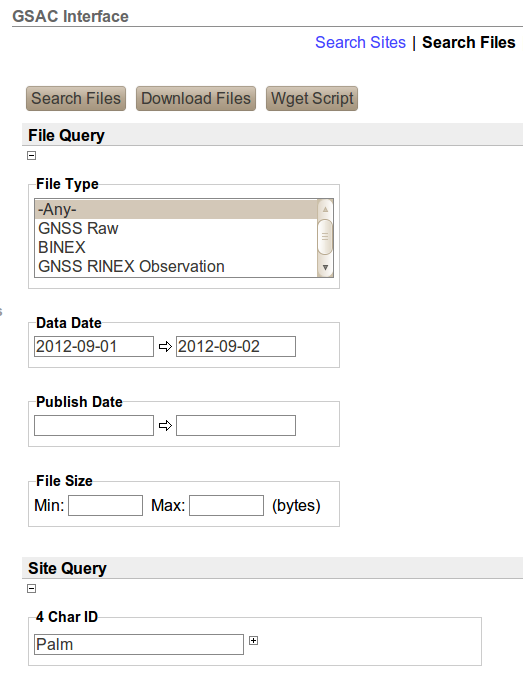
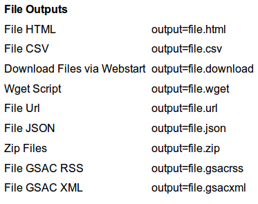
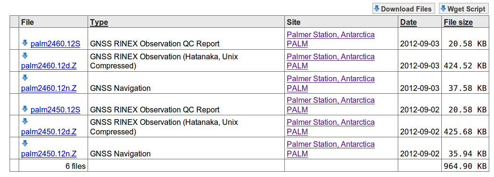

| Previous | Next |
Here is part of a typical GSAC Search Files form. In this example the Data Date range is for the first day in October 2012, and the Site Query option is used to search for files from a station named PALM. Most search choices are optional; use the ones which suit your needs.

There are several output formats for the results of the search. Click open the
Results
Output:
option box, located below the Site Query area. The choices are

By default the results are a web page ("File HTML").
A web page of file search results looks like:
Clicking on an item in the File column gives a new page like this, with some information about one file:
Clicking on the Site: name brings up the normal page of information about this site from GSAC.
Clicking on the URL: does the normal response to clicking on a URL in your browser; it may show a page of text or may prompt for a file download from the URL.
Note that you must have FTP server running on your web site with complete information about the file location in your database for GSAC and FTP access.
Back on the main file results table, clicking on a name in the Site column brings up the normal page of information about this site from GSAC.
On the main file results table, clicking on
Wget Script gives you a shell file "gascwget.sh" which has one or more lines, each line a wget command to download
the files in the results table you are looking at. Such as
wget ftp://data-out.unavco.org/pub/rinex/qc/2012/274/palm2740.12S
wget ftp://data-out.unavco.org/pub/rinex/obs/2012/274/palm2740.12d.Z
wget ftp://data-out.unavco.org/pub/rinex/nav/2012/274/palm2740.12n.Z
Note this wget script file will download all the files in the output page, which for some searches is hundreds of files. One line from the wget script file will download one file.
On the main file results table, clicking on
Download files gives you a file "files.jnlp" to download all the files using Java Webstart.
See the GSAC File Downloader Help page,
Next.
| Previous | Next |